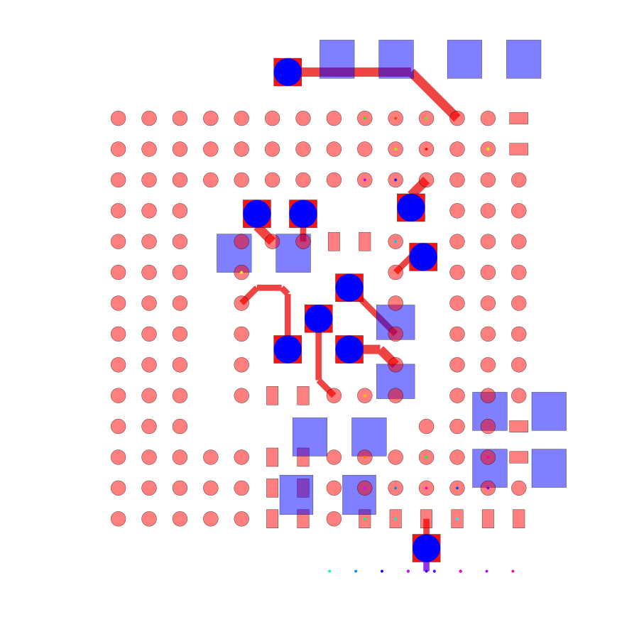
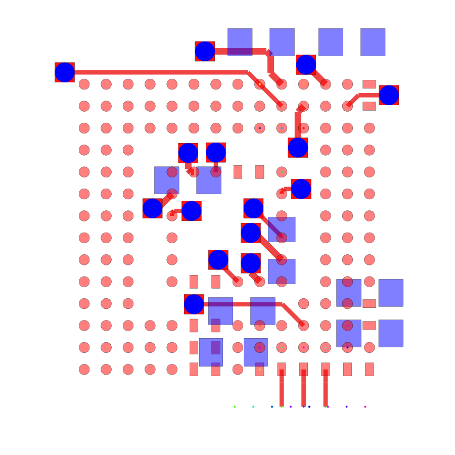
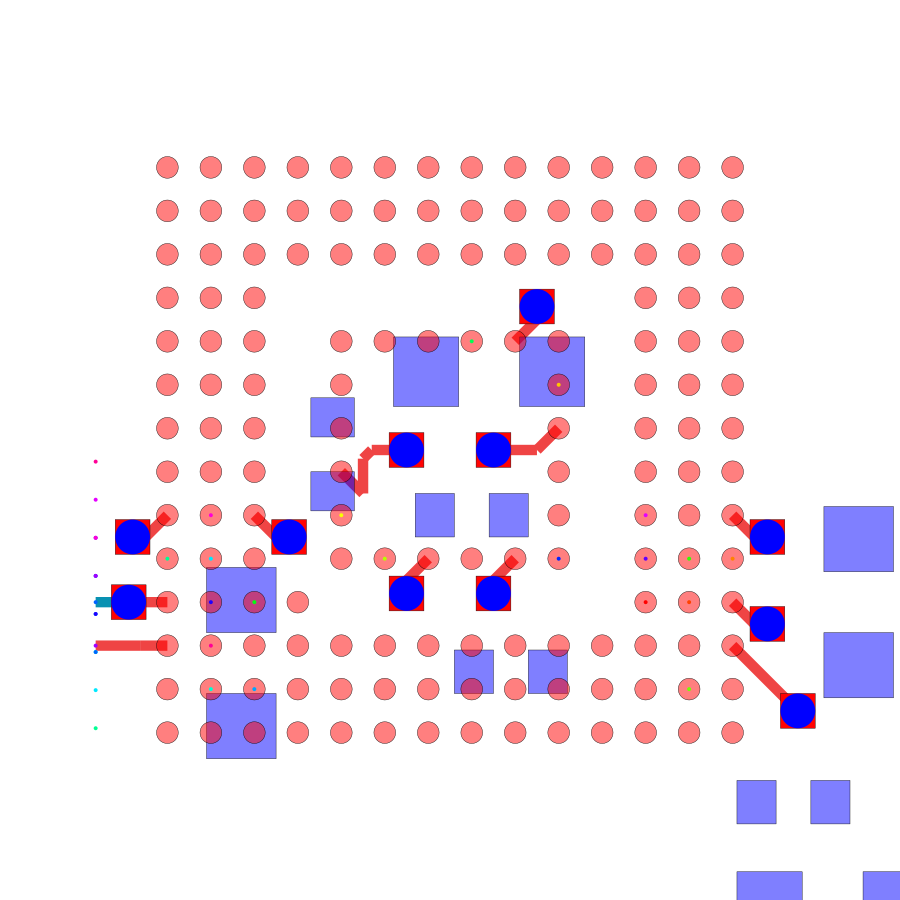
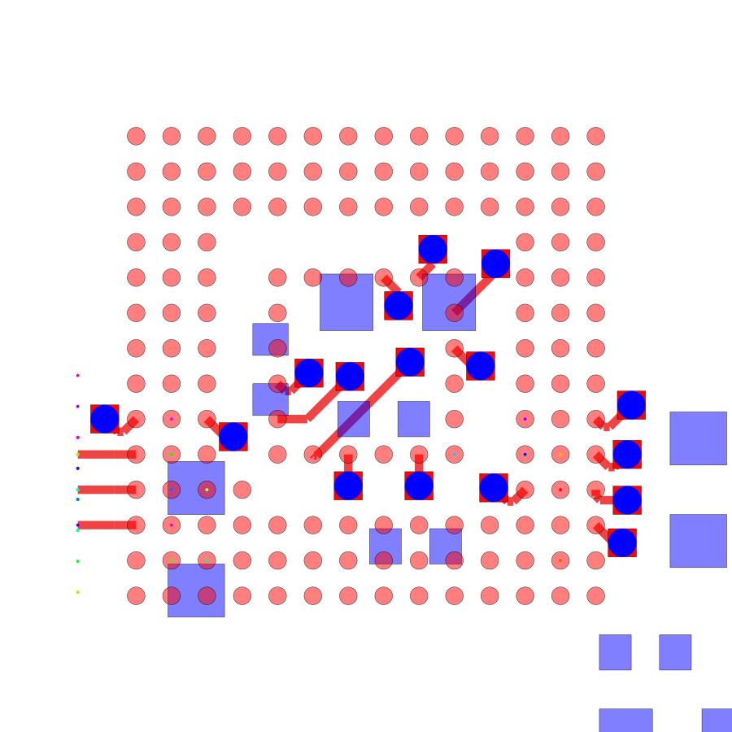

Valid joint partial escapes increase 77→115 (+49.4%) across three original native captures; physical drills increase 69→96. All six full boards still stop at their first incomplete fanout. No committed traces/vias and no DDR bus phase.
Exact statistics · Versions and runs · All full-board PCB SVGs before/after
Repros #304→#321, then fixes #318→#305→#322. Each fix is one commit.
Before is the request-safe site fix; after is the full stack. Every listed attempt passes copper DRC, original widths, explicit physical leads and finite same-net plane landings. These remain uncommitted partials.
| Capture | Before | After | Improvement | Physical drills |
|---|---|---|---|---|
| iCE/Pi CM0 SBC | 10/32 | 18/32 | +80.0% | 10→15 |
| i.MX6 Demo Board | 12/32 | 19/32 | +58.3% | 11→16 |
| Glider mainboard | 55/95 | 78/95 | +41.8% | 48→65 |
Blue discs are actual vias. Small colored dots are debug endpoints. The following views crop native SVGs to the same physical region; via, wire and obstacle geometry is unchanged.
The new best partial retains 9 of the earlier 10 iCE/Pi requests and gains 9; retains all 12 i.MX6 requests and gains 7; retains 50 of the earlier 55 Glider requests and gains 28. These are changed best-partial memberships, not additional completed boards. The final extraction preserves the original #305’s exact request sets and drill counts on all three captures.
| Before | After |
|---|---|
 |  |
| Before | After |
|---|---|
 |  |
235/300→247/300 accepted (+5.1%); 180→165 physical drills (−8.3%). Every accepted request passes physical DRC and its original resolved width. These 300 one-request controls overlap the joint cohort and must not be added to it.
There are 13 gains and one OrangeCrab loss: breakout 5’s new rightward sites collide with C4. Explicit directions and ambiguous corner/interior inference retain their existing behavior.
| Experiment | Result | Decision |
|---|---|---|
| Remove cached repair | iCE18→16;i.MX19→16;Glider78→75 | Keep the bounded cached repair. |
| Remove residual ordinary pass | Glider78→66 | Keep the single residual pass. |
| Use inferred free-heading tie order | Adding the boundary default drops Glider78→77 | Use a stable cardinal order only for truly unconstrained requests; retain78 with either default. |
| Remove blocked-layer pruning | Identical copper; small native searches take75–82s instead of15–17s | Keep the small original pruning fix. The coordinated pool retains every allowed layer. |
Timing comparisons are single paired Blacksmith replays to search exhaustion, not P50/P95 or full-board solve-time claims. All routing experiments use original physical rules. Earlier DRC-only counts that missed request-width/lead violations are superseded by the independent request audit.
All source geometry, nets and rules match the captured originals. Original traces and vias are removed; original pours remain as geometry and plane targets. Every plan orders fanout before bus lanes before the remaining nets. The first atomic fanout is incomplete on every board, so the full emitted PCBs have no new traces or vias.
| Board | Published baseline first-region partial | After stack | Committed traces/vias | Native PCB SVG |
|---|---|---|---|---|
| OrangeCrab rev 0.2.1 ECP5 DDR3 | 122/273 | 134/273 | 0/0 | Before · After |
| Allwinner H616 Devboard DDR3 | 88/174 | 99/174 | 0/0 | Before · After |
| ButterStick r1.0 | 62/91 | 52/91 | 0/0 | Before · After |
| Glider mainboard | 60/95 | 78/95 | 0/0 | Before · After |
| i.MX6 Demo Board | 8/32 | 19/32 | 0/0 | Before · After |
| iCE/Pi CM0 SBC | 7/32 | 18/32 | 0/0 | Before · After |
The published baseline partials include invalid copper or original-request violations; their raw counts are not valid complete-net totals. ButterStick also loses some previously clean requests, so its count reduction is not explained entirely by rejecting invalid vias. See the per-request DRC audit.
Frozen Fanout31: 30/72 solved before and after, 42 timeouts in each run; all 30 completed SVG hashes match. The final blocked-layer pruning predicate is false for all 72 cases. Literal PreparedBus byte equality is not claimed after the new readonly constraint markers.
The original full #305 control passes all physical/request checks at 18/19/78. The extraction retains those yields, introduces no solver class, and keeps candidate generation, selection and repair in small modules. The incremental route generator yields between candidate and selection work.